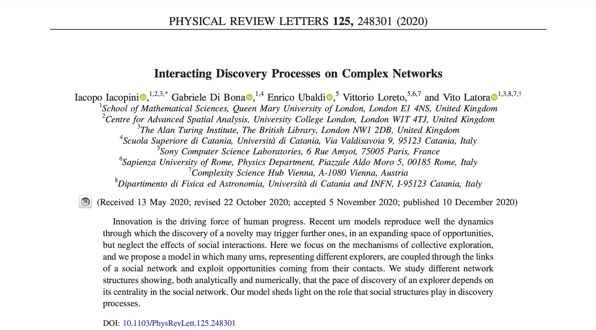

Out in Physical Review Letters!
Our Interactive discovery processes on complex networks is now published
New paper “Interactive discovery processes on complex networks” with G. Di Bona, E. Ubaldi, V. Loreto and V. Latora just got published in Physical Review Letters.
👉👉👉👉👉 Have a look! 👈👈👈👈👈
We also made it to the cover page!
Short summary

Discoveries are essential milestones for the progress of our societies. Recently, different mathematical approaches have been proposed to investigate and model the hidden mechanisms behind to the emergence of the new. Among these, of particular interest are random processes with reinforcement, such as urn models and biased random walks:
- F. Tria et al. “The dynamics of correlated novelties”
- I. Iacopini et al. “Network Dynamics of Innovation Processes”
These models could successfully replicate the basic signatures of real-world discovery and innovation processes, such as the Heaps’ law, a sub-linear growth of the number of distinct elements $D(t)\sim t^\beta$ with the number of elements $t$, which governs the rate at which novelties grow. However, they neglect the effects of social interactions. In particular, by considering the exploration dynamics as the one of a single entity and thus neglecting the multi-agent nature of the process, these models
- do not capture the heterogeneity of the pace of the individual explorers;
- do not include the benefits brought by social interactions and collaborations.
Indeed, empirical evidences of these mechanisms have been found in various contexts, from music-listening and language to politics and voting.

In this Letter, we propose a model of interacting discovery processes in which each explorer is associated with a node of a complex network, and an urn model with triggering (UMT) governs its dynamics. In this framework, the appearance of a novelty opens up the possibility of further discoveries through an expansion into the adjacent possible. Urns are then coupled through the links of a network so that each exploration process is also subjected to interactions with the processes of the neighboring nodes, and explorers can exploit opportunities (possible discoveries) coming from their social contacts.

Social networks have been vastly used as structures on top of which dynamical processes take place. Here, we investigate the behavior of many coupled dynamical discovery processes on complex networks and study the impact of the network topology on the exploration dynamics. We find that the pace of discovery $\beta_i$ of an explorer strongly depends on its position in the social network. We obviously could not desist from using the Zachary karate club network. Notice the higher pace of discovery displayed by the notoriously central nodes. This proves that nodes with identical UMTs can have completely different dynamics, suggesting that a strategic location on the social network correlates with the discovery potential of an individual.

We investigate this relation through numerical simulations on synthetic and real-world networks, and we identify the key role played by the network centrality. While thermalization times—typical of empirical trajectories of diffusion process—are strongly influenced by the topology of the network, we find the ranking induced by the pace of discovery persists at all finite times.

We further explore this characteristic behavior and ultimately prove its universality for all networks. In particular, we show that the ranking of the nodes that distinguishes the fastest explorers can be predicted analytically by using the eigenvector centrality (or the $\alpha$-centrality in the most general case of non-strongly connected graphs). This highlights that the structural—not just local—properties of the nodes can strongly affect their ability to discover novelties.
Iacopo Iacopini
Associate Professor
My research interests include complex networks, social systems, and cities.